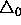
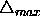
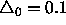
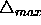
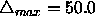
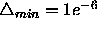

The Rprop algorithm takes three parameters: the initial update-value

, a limit for the maximum step size,
, and the weight-decay exponent (see above).
(see above).
When learning starts, all update-values are set to an initial value
 . Since
. Since  directly determines the size of the first
weight step, it should be chosen according to the initial values of
the weights themselves, for example
directly determines the size of the first
weight step, it should be chosen according to the initial values of
the weights themselves, for example

(default setting). The choice of this value is rather uncritical, for it is adapted as learning proceeds.In order to prevent the weights from becoming too large, the maximum weight-step determined by the size of the update-value, is limited. The upper bound is set by the second parameter of Rprop,

. The default upper bound is set somewhat arbitrarily to
. Usually, convergence is rather insensitive to this parameter as well. Nevertheless, for some problems it can be advantageous to allow only very cautious (namely small) steps, in order to prevent the algorithm getting stuck too quickly in suboptimal local minima. The minimum step size is constantly fixed to
.